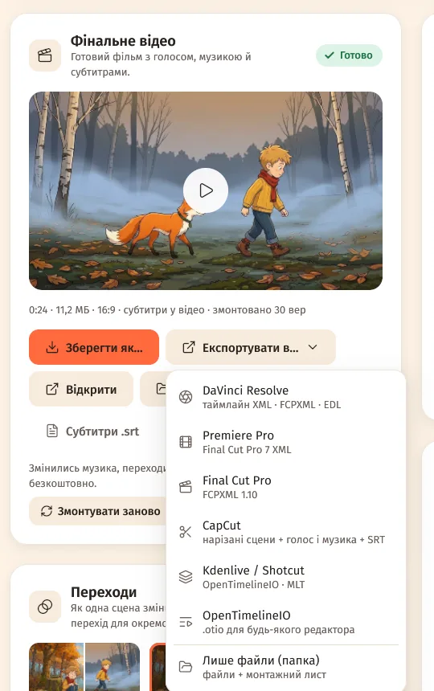
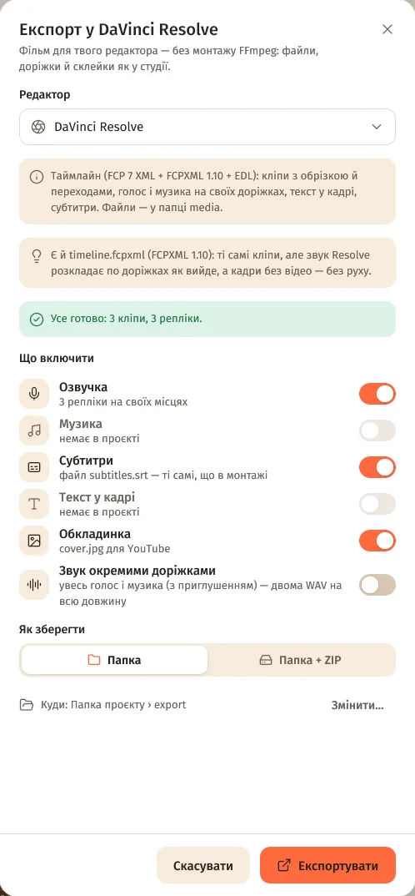
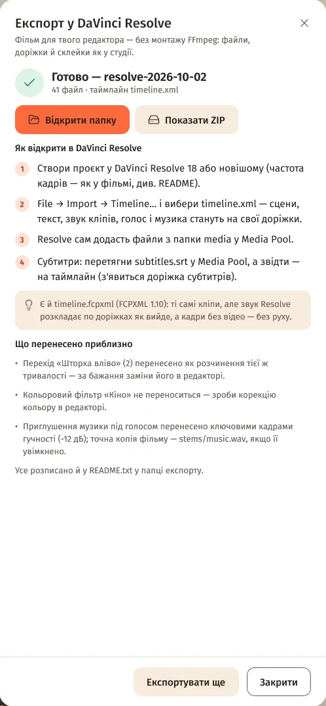
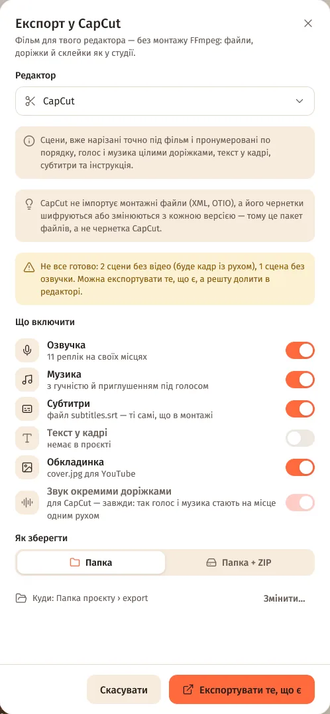

Як експортувати
- Крок «Монтаж» → картка «Фінальне відео» → «Експортувати в…» (або меню ⋯ проєкту → «Експортувати в редактор…») → вибери редактор.
- «Що включити»: «Озвучка», «Музика», «Субтитри», «Текст у кадрі», «Обкладинка», «Звук окремими доріжками» (голос і музика двома WAV на всю довжину; для CapCut і «Лише файли» — завжди).
- «Як зберегти»: «Папка» або «Папка + ZIP». «Куди» — типово папка проєкту ›
export(«Змінити…»). - «Експортувати». Не все готово — кнопка «Експортувати те, що є»: сцена без відео піде кадром із рухом.
- «Відкрити папку» — кроки «Як відкрити в …» є прямо у вікні й у
README.txt.


Монтувати фільм у студії перед експортом не обов'язково. Потрібен лише FFmpeg — його студія ставить одним кліком.
Що в папці
| Що | Навіщо |
|---|---|
media/ | Кліпи 001_scene.mp4 (таймлайн тримає обрізку), кадри 001_frame.jpg і 001_hold.jpg, голос 001_voice.*, текст у кадрі 001_text.png, музика. |
| файл таймлайну | Для твого редактора (див. нижче). |
subtitles.srt | Ті самі субтитри, що в монтажі. |
cover.jpg | Обкладинка для YouTube. |
edit-list.csv | Монтажний лист: що, звідки й куди. |
stems/voice.wav, stems/music.wav | Голос і музика (з приглушенням) на всю довжину фільму. |
README.txt | Що в папці, як відкрити, доріжки, частота кадрів і що перенесено приблизно. |
Доріжки: V1 — сцени, V2 — текст у кадрі, A1 — звук кліпів, A2 — голос, далі — музика з приглушенням під голосом (−12 дБ). Кліпи на тому ж диску — посиланнями, тож місця не займають.
Як відкрити в редакторі
DaVinci Resolve 18+
Таймлайн: timeline.xml — рекомендовано, найточніший; ще timeline.fcpxml і timeline.edl (запасний, лише сцени).
- Створи проєкт у DaVinci Resolve 18 або новішому (частота кадрів — як у фільмі, див. README).
- File → Import → Timeline… →
timeline.xml. Сцени, текст, звук кліпів, голос і музика стануть на свої доріжки. - Resolve сам додасть файли з папки
mediaу Media Pool. - Субтитри: перетягни
subtitles.srtу Media Pool, а звідти — на таймлайн.
У timeline.fcpxml ті самі кліпи, але звук Resolve розкладає по доріжках як вийде, а кадри без відео — без руху.
Premiere Pro
Таймлайн: timeline.xml (Final Cut Pro 7 XML).
- File → Import… →
timeline.xml. - Premiere створить послідовність з кліпами, голосом, музикою й текстом на окремих доріжках.
- Субтитри: File → Import… →
subtitles.srt, потім перетягни на таймлайн (Captions).
Final Cut Pro 10.5+
Таймлайн: timeline.fcpxmld (і timeline.fcpxml).
- Скопіюй усю папку на Mac (разом із
media). - File → Import → XML… →
timeline.fcpxmld(абоtimeline.fcpxml). - Файли не знайшлися — File → Relink Files… → папка
media. - Субтитри: File → Import → Captions… →
subtitles.srt.
CapCut
Таймлайн: Без таймлайну — пакет файлів: сцени, вже нарізані точно під фільм, і голос із музикою цілими доріжками.
- Новий проєкт → «Імпорт» → усі файли
*_scene.mp4з папкиmedia. - Виділи їх у медіатеці (вони вже по порядку) і перетягни на таймлайн — склейки будуть точно як у фільмі.
- Перетягни
stems/voice.wavіstems/music.wavна аудіодоріжки з самого початку (0:00). - Субтитри: Текст → Локальні субтитри →
subtitles.srt.
Чому не чернетка: CapCut не імпортує монтажні файли (XML, OTIO), а його чернетки шифруються або змінюються з кожною версією. Сцени склеєні різко — переходи додай у CapCut.
Kdenlive 25.04+ / Shotcut
Таймлайн: timeline.otio і timeline.mlt.
- Kdenlive: File → OpenTimelineIO Import… →
timeline.otio. - Shotcut: File → Open… →
timeline.mlt. - Субтитри: у Kdenlive — Project → Subtitles → Import Subtitle File; у Shotcut — панель Subtitles → Import.
OpenTimelineIO
Таймлайн: timeline.otio.
- Відкрий у програмі, що читає OpenTimelineIO: DaVinci Resolve 18.5+ (File → Import → Timeline), Kdenlive 25.04+, Nuke Studio, Hiero, RV.
- Або сконвертуй будь-яким конвертером OpenTimelineIO у потрібний формат.
Лише файли (папка)
Таймлайн: edit-list.csv — монтажний лист.
- У папці
media— усі файли фільму, пронумеровані за сценами. edit-list.csv— що, звідки (вхід/вихід) і куди ставити на таймлайні.stems/voice.wavіstems/music.wav— голос і музика на всю довжину: постав їх з 0:00.


Що переноситься приблизно
Точно переносяться порядок і довжина сцен, обрізка кліпів, утримання останнього кадру, розчинення й затемнення між сценами, місця реплік і субтитри. Приблизно:
- Переходи-шторки, зсуви тощо стають розчиненням тієї ж тривалості.
- Ефекти руху — ключові кадри масштабу й позиції; «Ручна камера» — нерухоме наближення.
- Кольорові фільтри не переносяться — зроби корекцію кольору в редакторі.
- Анімований текст — прозорі PNG із плавною появою (вліт і лічильник зроби в редакторі).
- Голос — з точністю до кадру; точна до семпла доріжка —
stems/voice.wav. - Приглушення музики — ключові кадри гучності; точна копія —
stems/music.wav.
Повний список для твого проєкту — у вікні після експорту й у README.txt.
Питання
Перемістив папку — редактор не бачить файлів
Скористайся Relink / «Знайти файли» в редакторі й вкажи папку media. timeline.mlt для Shotcut посилається на файли відносно себе — його можна переносити разом із папкою.
Яку частоту кадрів ставити в проєкті редактора?
Ту, що в README.txt (як у кліпів). Розмір кадру — теж звідти.
Чи можна експортувати незавершений проєкт?
Так: «Експортувати те, що є». Сцени без відео підуть кадром із рухом, без кадру — пропустяться, а решту долиєш у редакторі.